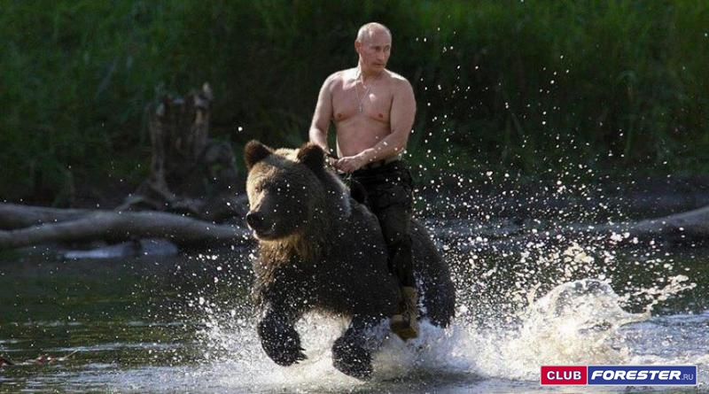

Путину нужен «либеральный кандидат», чтобы устроить шоу,
способное обеспечить достойную явку.
Дратуте.
Сегодня с утра российский политический
мир переполошила новость, что к участию
в президентской кампании («выборах
Путина», как все чаще говорят) привлекут
женщину. И наиболее интересной
фигурой в этой связи называют
Ксению Собчак, которая могла бы
предстать на выборах эдаким вольным
либералом, дополняющим
традиционную
кремлевскую упряжку: птицу-тройку
«Зюганов-Миронов-Жириновский».
Отметим, что речь идет именно о
привлечении Кремлем нового
«антипутинского кандидата»,
а вовсе не о выдвижении Ксении
Анатольевны.
То есть власть нуждается не в сторонниках
Путина, которых и так предостаточно,
а в противниках. И это придает данной
истории интригу.
Когда думала, что я на самом дне, снизу постучали.
Сама Собчак быстро отреагировала
на сообщения в СМИ, заявив, что с кремлевской
администрацией никаких дел не имеет.
Понятно, что даже если бы имела, после
подобной «утечки» ей было бы трудно
выдвигаться в качестве
независимого
от Кремля либерала. Но умный человек
в ее положении в любом случае ввязываться
в подобные игры не станет. Ведь речь идет не о
реальной президентской кампании,
а о ее имитации. А все «кандидаты» лишь
работают на укрепление позиций Путина.
Наследник Путина
Выборы президента в России давно
перестали быть политическим действом.
Мы ведь прекрасно знаем, кто победит.
В назначенный день народ придет на
участки и бросит в урну бюллетени,
в подавляющем большинстве которых
будет отмечено имя Путина.
А если результат окажется недостаточно
солидным, это несложно исправить.
Массовые вбросы давно уже не являются
секретом даже для рядовых сторонников
нынешнего режима.
Впрочем, все это не означает, что голосование
не имеет смысла и превращается
в унылый ритуал, как в СССР. Думается,
президентскую кампанию постараются
провести достаточно ярко. Но при этом она
будет напоминать не состязание
соперников, а развлекательное шоу.

Юрий Шевчук
Путин едет по стране
На серебряном коне.
Путин всем людя́м поможет,
Дай ему здоровье, Боже.
Всех бандитов перебьёт,
Работягам он нальёт.
Путин едет по стране,
А мы по-прежнему ...
— песня Ночная пьеса
В ходе президентской кампании Путин
не будет бороться с оппозицией.
Она устранена
совокупными усилиями всех
представителей системы, а единственный
политик, который
может представлять интерес для
недовольного положением дел
избирателя,
— Алексей Навальный — к выборам не допущен.
Для Путина же сейчас важно
продемонстрировать тем самым
представителям системы,
что он по-прежнему ей необходим.
Что народ его любит и слушается. Что он —
единственный символ современной России.
Что электоральный авторитаризм с
бесконечным переизбранием
одного и того же человека на пост главы
государства более устойчив, чем, скажем,
диктатура, основанная на силовиках,
или даже имитация
демократии с молодым преемником.
Кому нужен развитой путинизм?
Путин должен убедить всю свою разношерстую
команду, слепленную за 18 лет из
силовиков, олигархов, чиновников,
депутатов и т. д., что даже при стагнирующей
экономике, санкциях и «черных списках» им
комфортнее жить с ним, чем пытаться
что-то менять. А для этого он должен показать, что
народ у него «с рук кушает»
и можно не тратить силы на подавление или
ублажение масс.
Однако если президентская кампания
будет скучной, то явка окажется низкой.
Бумажек в урны сколько нужно накидают,
но в правящей группе сформируется
представление, что «Акела промахнулся»,
что он уже не тот: драйв прошел,
харизма поизносилась — а значит в
кризисной ситуации Путин может
оказаться бесполезен.
Примерно как Чаушеску, который долго
был национальным лидером
Румынии и гением Карпат, но,
состарившись, не смог предотвратить
социального взрыва.
Путин должен показать сегодня своим
людям, что может выиграть выборы почти
без фальсификаций. Вбросы — это
нормальный для системы способ сохранения
власти, но ненормальный лично для Путина.